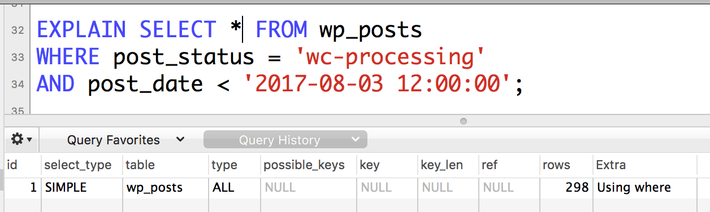
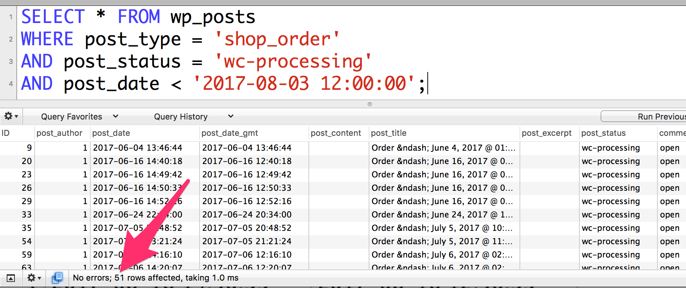
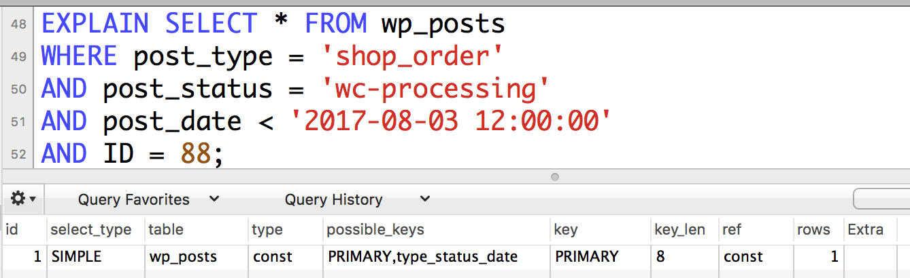
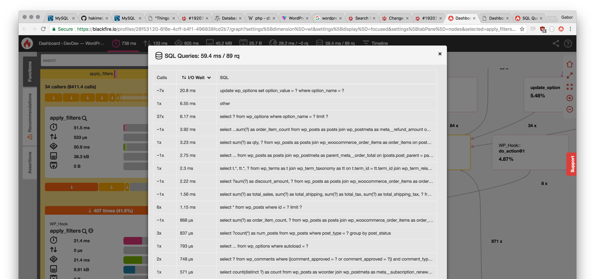

Things you didn't know you need to know about WordPress and databases
crash course into database architecture
Assumptions
-
Site is large with lots of data
-
potentially one with WooCommerce
-
InnoDB storage engine (your WordPress site most probably uses this by default)
common (slow) queries
get me all the orders for user 4
get me all subscriptions where the next payment date is between X and Y
get me all orders where the total is $19.92
get me the sum of all order totals where the order date is in May and order by order total. or date
basically doing anything on the admin area
All of those are going to be
...really...
...slow.
The Talk
- indexes and how to use them
- storing data in multiple tables vs one table - foreign keys and why they're awesome
- tools to measure stuff
Indexes
What are they?
Why are they important?
How do they work?
Indexable, unindexable (looking at you, postmeta value!)
What are indexes
 j zamora
j zamora
 Sanwal Deen
Sanwal Deen
How do indexes work?
From MySQL documentation on indexes
Indexes are used to find rows with specific column values quickly. Without an index, MySQL must begin with the first row and then read through the entire table to find the relevant rows. The larger the table, the more this costs. If the table has an index for the columns in question, MySQL can quickly determine the position to seek to in the middle of the data file without having to look at all the data. This is much faster than reading every row sequentially.
Why are they important?
In short: well designed indexes will get you the data in a fast, efficient manner.
You can do more on the same hardware => cheaper hosting => faster site => happier customers => more income / profit
Columns, data types
- numeric: INTEGER, BIGINT, SIGNED / UNSIGNED
- string: TEXT, VARCHAR, LONGTEXT
- date type: DATE, TIMESTAMP, DATETIME
- specifying character lengths: VARCHAR(191), BIGINT(20)
Examples of signed / unsigned. "Can it have a negative sign?". Highest binary place is the sign
// signed -127 – +127
011111111 = +127
111111111 = -127
// unsigned 0 – 255
011111111 = 127
111111111 = 255
What / how should be indexed?
From MySQL documentation on optimization and indexes
Although it can be tempting to create an indexes for every possible column used in a query, unnecessary indexes waste space and waste time for MySQL to determine which indexes to use. Indexes also add to the cost of inserts, updates, and deletes because each index must be updated. You must find the right balance to achieve fast queries using the optimal set of indexes.
What / how should be indexed?
"Indexes are less important for queries on small tables, or big tables where report queries process most or all of the rows. When a query needs to access most of the rows, reading sequentially is faster than working through an index. Sequential reads minimize disk seeks, even if not all the rows are needed for the query. See Section 8.2.1.19, “Avoiding Full Table Scans” for details."
Unique / multi index
UNIQUE: one value can only appear once in a row. Trying to insert same value will result in a database error message. Super fast
Example: post IDs
Multi index: same value can repeat. Still fast, though additional filtering required.
Example: postmeta_key
NULL values in indexes
From optimizing InnoDB queries
If an indexed column cannot contain any NULL values, declare it as NOT NULL when you create the table. The optimizer can better determine which index is most effective to use for a query, when it knows whether each column contains NULL values.
tldr; if it shouldn't be NULL, declare it so. It will be faster.
protip: primary keys will always be NOT NULL!
protip2: unique keys permit multiple NULL values!
Compound indexes
-- given these columns
-- ID, post_name, post_date
CREATE INDEX (`ID`, `post_name`, `post_date`)
-- will result in a compound index across ID, post_name, post_date, in that order
“If the table has a multiple-column index, any leftmost prefix of the index can be used by the optimizer to look up rows.”
SELECT * FROM table WHERE `ID` = x, `post_name` = y -- uses index (1,2)
SELECT * FROM table WHERE `ID` = x -- uses index (1)
SELECT * FROM table WHERE `ID` = x, `post_date` = z -- NOT using index (1,3)
SELECT * FROM table WHERE `post_name` = y, `post_date` = z -- NOT using index (2,3)
SELECT * FROM table WHERE `post_name` = y -- NOT using index (2)
WP DB - posts

WP DB - posts
WP DB - posts
MariaDB [dev.dev]> show columns from wp_posts;
+-----------------------+---------------------+------+-----+---------------------+----------------+
| Field | Type | Null | Key | Default | Extra |
+-----------------------+---------------------+------+-----+---------------------+----------------+
| ID | bigint(20) unsigned | NO | PRI | NULL | auto_increment |
| post_author | bigint(20) unsigned | NO | MUL | 0 | |
| post_date | datetime | NO | | 0000-00-00 00:00:00 | |
| post_date_gmt | datetime | NO | | 0000-00-00 00:00:00 | |
| post_content | longtext | NO | | NULL | |
| post_title | text | NO | | NULL | |
| post_excerpt | text | NO | | NULL | |
| post_status | varchar(20) | NO | | publish | |
| comment_status | varchar(20) | NO | | open | |
| ping_status | varchar(20) | NO | | open | |
| post_password | varchar(255) | NO | | | |
| post_name | varchar(200) | NO | MUL | | |
| to_ping | text | NO | | NULL | |
| pinged | text | NO | | NULL | |
| post_modified | datetime | NO | | 0000-00-00 00:00:00 | |
| post_modified_gmt | datetime | NO | | 0000-00-00 00:00:00 | |
| post_content_filtered | longtext | NO | | NULL | |
| post_parent | bigint(20) unsigned | NO | MUL | 0 | |
| guid | varchar(255) | NO | | | |
| menu_order | int(11) | NO | | 0 | |
| post_type | varchar(20) | NO | MUL | post | |
| post_mime_type | varchar(100) | NO | | | |
| comment_count | bigint(20) | NO | | 0 | |
+-----------------------+---------------------+------+-----+---------------------+----------------+
23 rows in set (0.00 sec)
WP DB - posts
WP DB - postmeta
Why 191? - InnoDB key prefix limit is 767 bytes. WP tables use utf8mb4 charset, that's 4 bytes per character. 767 / 4 = 191.75, flooring that is 191. Only 191 characters fit into the key prefix.
WP DB - posts - EXPLAIN

WP DB - posts - EXPLAIN

WP DB - posts - EXPLAIN
WP DB - posts - EXPLAIN

WP DB - posts - EXPLAIN
WP DB - posts - EXPLAIN

WP DB - posts - Query
WP DB - posts - EXPLAIN
WP DB - posts - EXPLAIN
WP DB - posts - Query
Using WP_Query
By the way the previous is why WP Query forces you to declare a post_type, otherwise defaults to post.
// in class-wp-query.php line 2281 in version 4.8.1
// method get_posts()
} else {
$where .= " AND {$wpdb->posts}.post_type = 'post'";
$post_type_object = get_post_type_object ( 'post' );
}
If there was no post_type declaration, lots of queries would skip using the index.
ORDER BY
Think carefully what to use for order by. The full list is on MySQL docs on ORDER BY optimization.
Tips:
- The larger the data to order, the slower it'll be.
- Indexes can be used to order by if "if the ORDER BY does not match the index exactly, as long as all unused portions of the index and all extra ORDER BY columns are constants in the WHERE clause."
ORDER BY
These will use index:
-- same compound key, consecutive, no WHERE clause
SELECT * FROM t1
ORDER BY key_part1, key_part2;
-- key_part1 in WHERE with constant (not column), key_part2 in order by
SELECT * FROM t1
WHERE key_part1 = constant
ORDER BY key_part2;
-- key_part1 is compared to constant, same key used in order by
SELECT * FROM t1
WHERE key_part1 > constant
ORDER BY key_part1 ASC;
-- key parts compared to constants, order by uses same key part
SELECT * FROM t1
WHERE key_part1 = constant1 AND key_part2 > constant2
ORDER BY key_part2;
ORDER BY
These will not use index though:
-- Query uses two different indexes
SELECT * FROM t1 ORDER BY key1, key2;
-- non-consecutive compound index parts in order by
SELECT * FROM t1 WHERE key2=constant ORDER BY key_part1, key_part3;
-- mixes ASC and DESC
SELECT * FROM t1 ORDER BY key_part1 DESC, key_part2 ASC;
-- key in WHERE and key in ORDER BY are different
SELECT * FROM t1 WHERE key2=constant ORDER BY key1;
-- order by is an expression other than the index (needs calculation)
SELECT * FROM t1 ORDER BY ABS(key);
SELECT * FROM t1 ORDER BY -key;
GROUP BY
Either creates a temporary table, or uses indexes in VERY SPECIFIC cases.
Douglas Adam's words apply to Group By too:
The Encyclopedia Galactica, in its chapter on Love states that it is far too complicated to define. The Hitchhiker's Guide to the Galaxy has this to say on the subject of love: Avoid, if at all possible. Unfortunately, Arthur Dent has never read the Hitchhiker's Guide to the Galaxy.
JOINs
most efficient if indexes on colums are declared same type and size. Which is why all ID fields are BIGINT(20) in WP.
VARCHAR and CHAR are considered the same if their sizes match. VARCHAR(10) == CHAR(10).
Use same charset (this is usually taken care of for you)
Do not use columns that need type juggling though. eg numeric 1 and string '1', '00001', ' 1', '01.e1', etc
same table / new rel table?
Hypothetical WooCommerce Orders new table structure
- Is data required, and there's only one per order? => Same table, new colum! eg order total
- Is data optional, but there can only be one per order? => Same table, allow NULL
- Is data required, but there can be multiple per order? => new rigid table, for example list of coupons, list of line items
- Is data optional, is it arbitrary? => new general table, key-value pair, much like postmeta
deleting records
delete things from wp_posts
then need to clean up in wp_postmeta
... and terms
... and comments
... and taxonomy relationships...
The solution is (would be)
Foreign keys!!
Foreign Keys
foreign keys are constraints imposed on the database that keeps data across multiple tables consistent
CREATE TABLE parent (
id INT NOT NULL,
PRIMARY KEY (id)
) ENGINE=INNODB;
CREATE TABLE child (
id INT,
parent_id INT,
INDEX par_ind (parent_id),
FOREIGN KEY (parent_id)
REFERENCES parent(id)
ON DELETE CASCADE
) ENGINE=INNODB;
Foreign Keys
You can't insert data that doesn't belong to something that already exists in the main table.
Can't drop table that has other tables depending on it.
Foreign Keys
ON DELETE CASCADEif I delete the main record in parent, everything else that had its foreign key constrained to THAT id will automatically be deleted with it. Automatic cleanup! No more hunting for orphan data!
Of course it's not implemented in WordPress, mostly due to backwards compat reasons. (Trac 19207)
Tools
- NewRelic APM configured to give you slow queries
- MySQL Workbench / Seqel Pro / mysql cli for the EXPLAIN queries. Please don't use phpmyadmin for this even though it COULD.
- Blackfire.io
Tools - New Relic

Tools - Blackfire
Tools - Sequel Pro
Tips
- You can't do much to WordPress database schema without breaking something
- rethink your theme / plugin / customisation code to make sure your queries use indexes
- rethink your theme / plugin's data storage schema to make sure you're not wasting resources
- learn more about MySQL. Their documentation is A++ 10/10 would recommend (or 5/7 for those who understand it)
- use profiling tools to find where the bottlenecks are
- you can always hire someone who knows how to database too